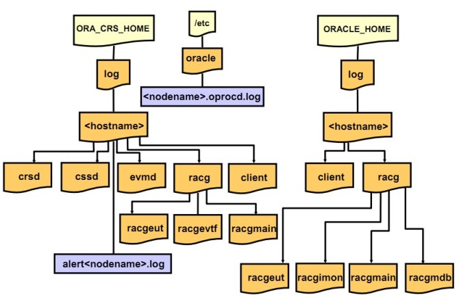

Oracle集群环境中日志体系结构，在遇到问题时，可以快速查找所需的日志文件，及时的定位问题~
1.Oracle集群日志的文件路径
Oracle集群涉及的日志主要位于“$GRID_HOME/log”和“$ORACLE_HOME/log”目录中。
2.日志目录结构
clusterware 层的日志结构：
grid@rac1:/home/grid>tree -d $ORACLE_HOME/log
/opt/rac/11.2.0/grid/log
|-- crs
|-- diag
| `-- clients
| `-- user_root
| `-- host_1874443374_76
| |-- alert
| |-- cdump
| |-- incident
| |-- incpkg
| |-- lck
| |-- metadata
| |-- stage
| |-- sweep
| `-- trace
`-- rac1
|-- admin
|-- agent
| |-- crsd
| | |-- oraagent_grid
| | |-- oraagent_oracle
| | `-- orarootagent_root
| `-- ohasd
| |-- oraagent_grid
| |-- oracssdagent_root
| |-- oracssdmonitor_root
| `-- orarootagent_root
|-- client
|-- crsd
|-- cssd
|-- ctssd
|-- diskmon
|-- evmd
|-- gipcd
|-- gnsd
|-- gpnpd
|-- mdnsd
|-- ohasd
|-- racg
| |-- racgeut
| |-- racgevtf
| `-- racgmain
`-- srvm
42 directories
RMDBS 层的日志结构：
oracle@rac1:/opt/rac/oracle/diag/rdbms/rac>tree -d rac1
rac1
|-- alert
|-- cdump
|-- hm
|-- incident
|-- incpkg
|-- ir
|-- lck
|-- metadata
|-- stage
|-- sweep
`-- trace
11 directories
其中“rac1”是主机名。
3.日志目录功能说明
- 1）CRS日志存放在“$GRID_HOME/log//crsd”目录，系统会对该日志每10M进行归档一次；
- 2）CSS日志存放在“$GRID_HOME/log//cssd”目录，系统会对该日志每20M进行归档一次；
- 3）EVM日志存放在“$GRID_HOME/log//evmd”目录；
- 4）“$GRID_HOME/log/”和“$ORACLE_HOME/log/”目录中的racg目录中记录了RACG可执行文件对应的日志；
- 5）$GRID_HOME/log/client和$ORACLE_HOME/log/client目录记录了与srvctl、ocrdump、ocrconfig以及ocrcheck命令对应的日志信息。
4.Oracle集群的alert日志
Oracle RAC环境中的alert日志文件与Oracle单实例的alert日志一样。该文件位于“在 $ORACLEBASE/rdbms//trace”目录下，命名规则为“alert.log” 该警告日志记录了有关Oracle集群rdbms 层面的重要警告信息。
oracle@rac1:/opt/rac/oracle/diag/rdbms/rac/rac1/trace>more alert_rac1.log
Starting up:
Oracle Database 11g Enterprise Edition Release 11.2.0.1.0 - 64bit Production
With the Partitioning, Real Application Clusters, OLAP, Data Mining
and Real Application Testing options.
Using parameter settings in client-side pfile /opt/rac/oracle/admin/rac/pfile/init.ora on machine rac1
System parameters with non-default values:
processes = 150
nls_language = "SIMPLIFIED CHINESE"
nls_territory = "CHINA"
memory_target = 1584M
control_files = "+DATA2/rac/controlfile/current.260.781821965"
db_block_size = 8192
compatible = "11.2.0.0.0"
log_archive_dest_1 = "LOCATION=+DATA2"
log_archive_format = "yangdb_%t_%s_%r.dbf"
db_create_file_dest = "+DATA2"
undo_tablespace = "UNDOTBS1"
instance_number = 1
remote_login_passwordfile= "EXCLUSIVE"
db_domain = ""
dispatchers = "(PROTOCOL=TCP) (SERVICE=racXDB)"
remote_listener = "scan:1521"
audit_file_dest = "/opt/rac/oracle/admin/rac/adump"
audit_trail = "DB"
db_name = "rac"
open_cursors = 300
diagnostic_dest = "/opt/rac/oracle"
Cluster communication is configured to use the following interface(s) for this instance
10.10.10.10
cluster interconnect IPC version:Oracle UDP/IP (generic)
IPC Vendor 1 proto 2
Sat Apr 28 20:50:38 2012
PMON started with pid=2, OS id=16042
Sat Apr 28 20:50:38 2012
VKTM started with pid=3, OS id=16044 at elevated priority
VKTM running at (10)millisec precision with DBRM quantum (100)ms
Sat Apr 28 20:50:39 2012
GEN0 started with pid=4, OS id=16048
Sat Apr 28 20:50:39 2012
DIAG started with pid=5, OS id=16050
Sat Apr 28 20:50:39 2012
DBRM started with pid=6, OS id=16052
5.小结
熟悉Oracle集群环境下日志文件的位置和功能有助于快速定位故障的位置，善用之。